Personagens

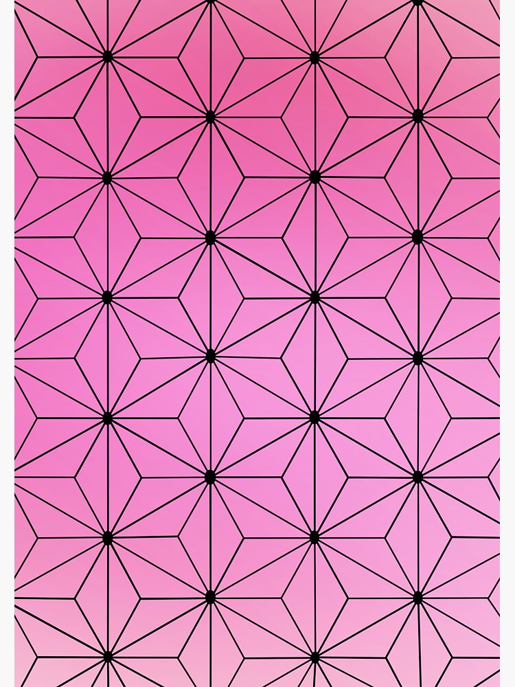
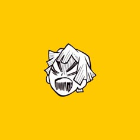
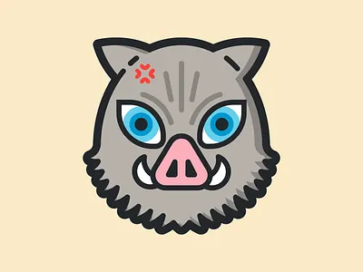
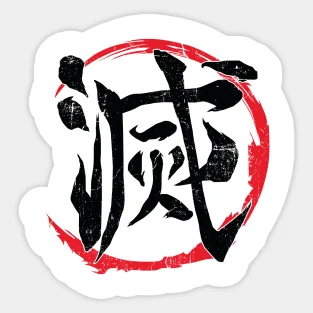
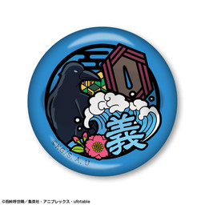
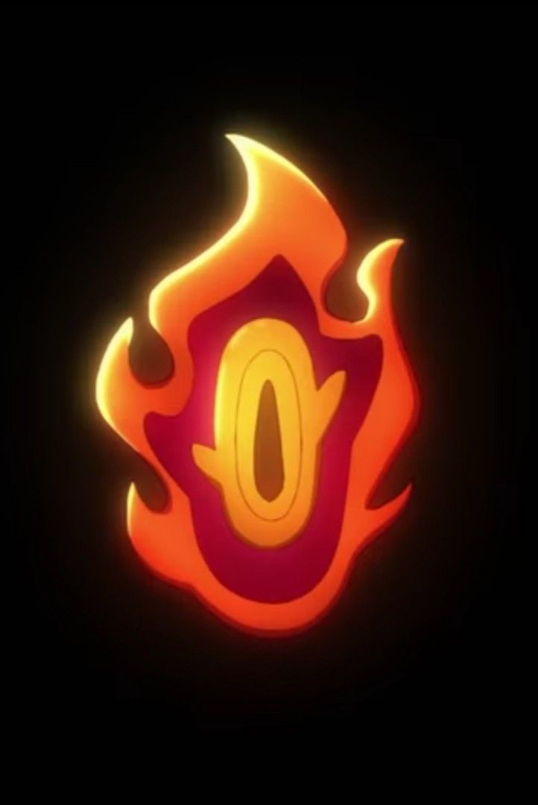
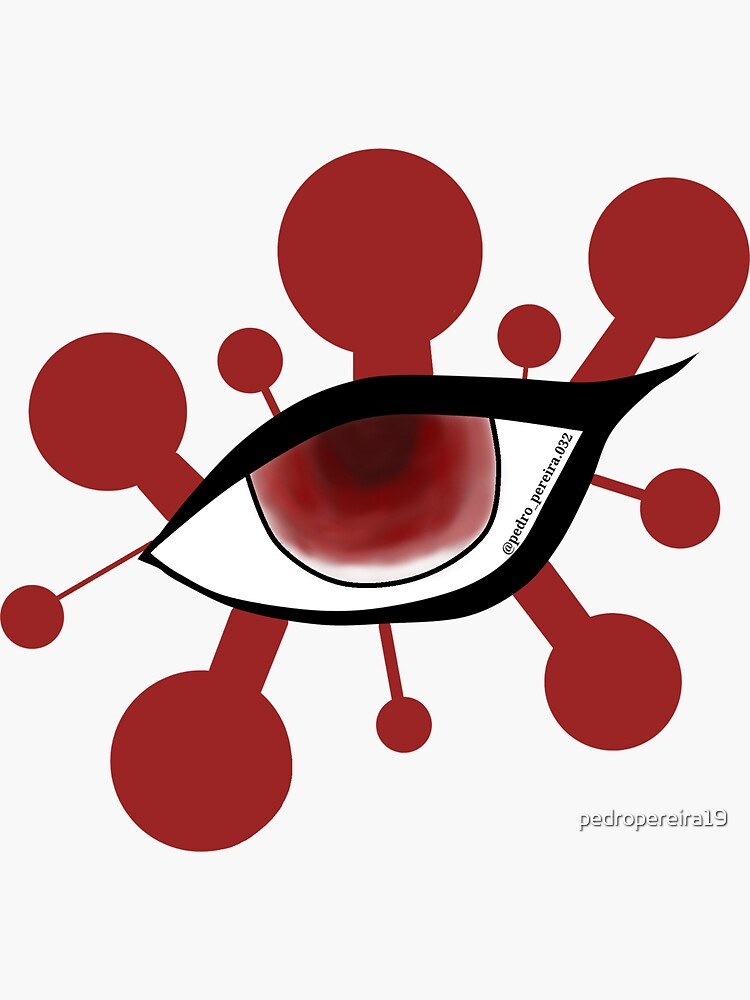
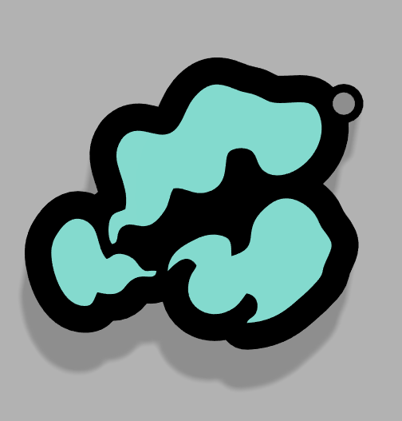
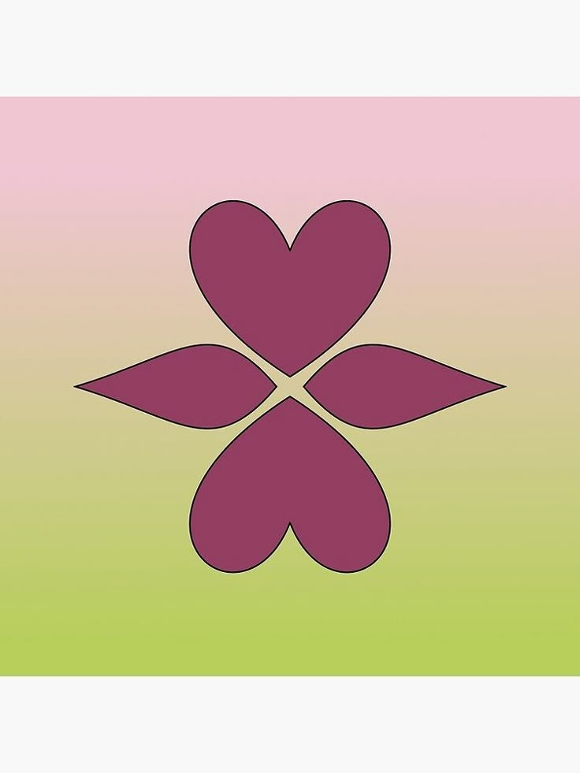
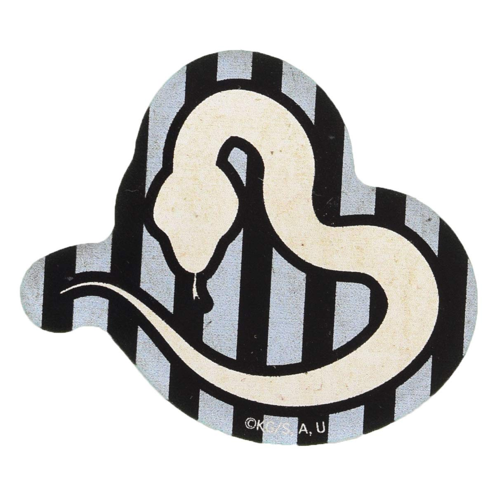
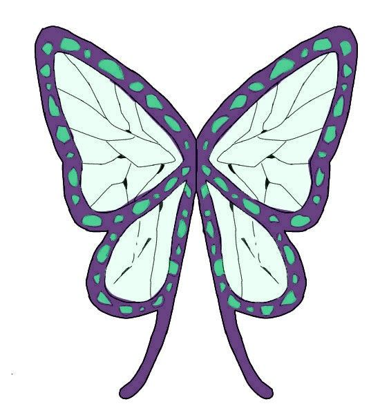
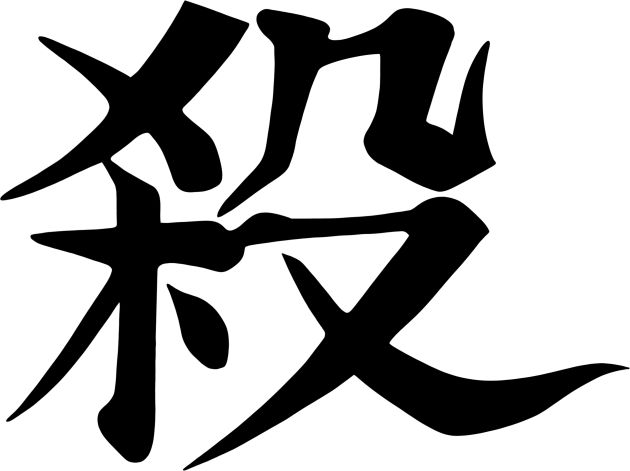
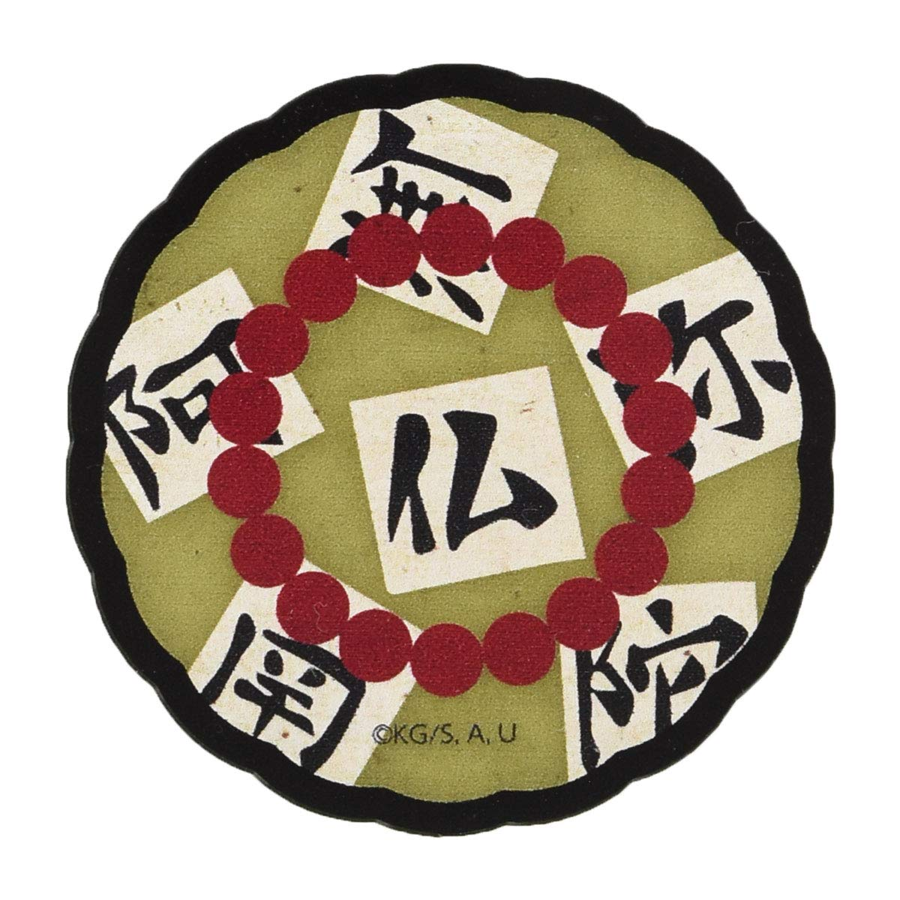
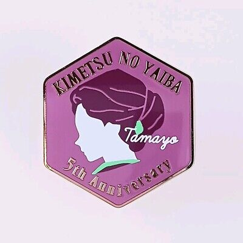
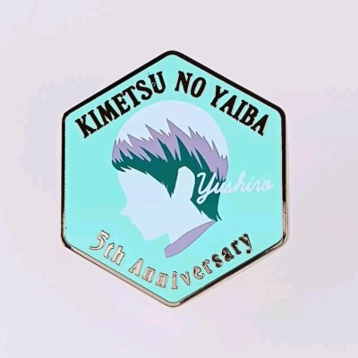
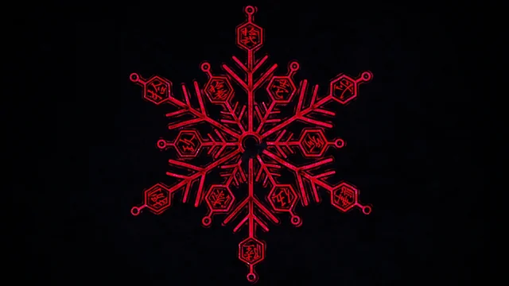
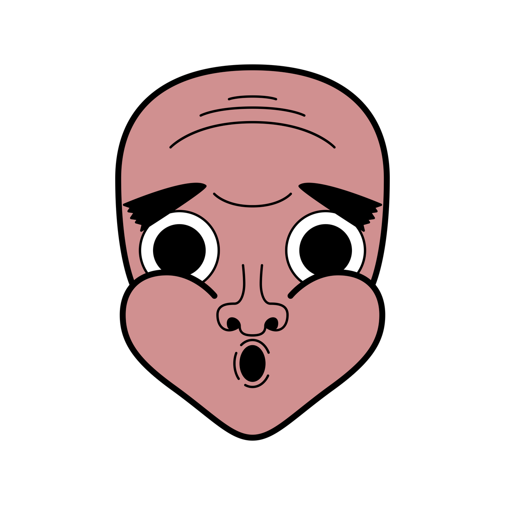
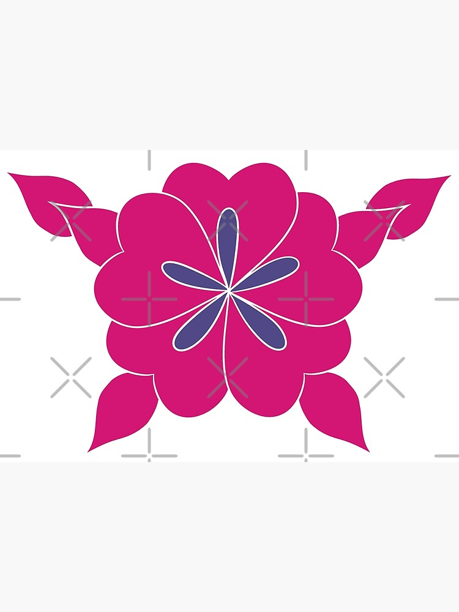
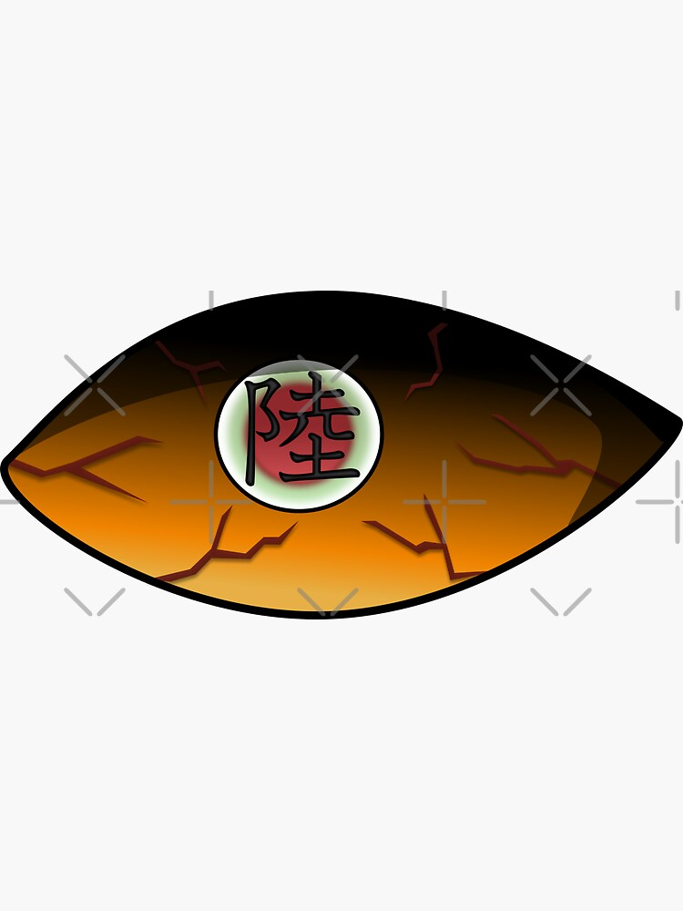
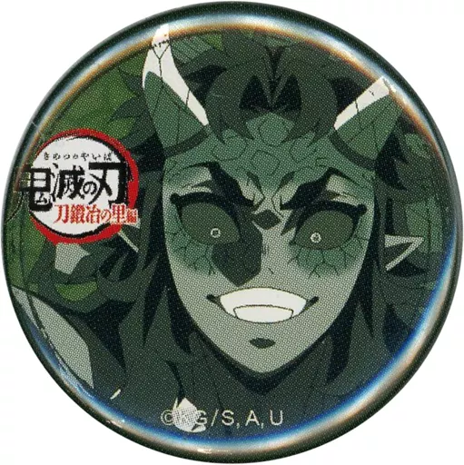
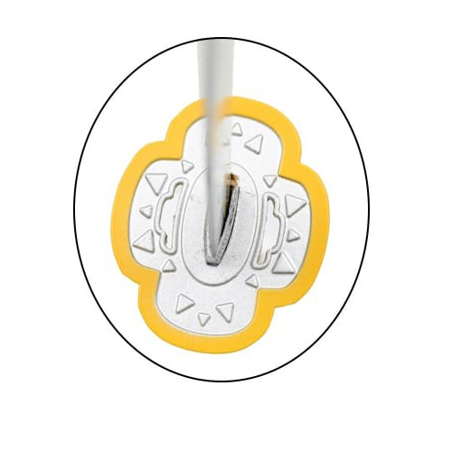
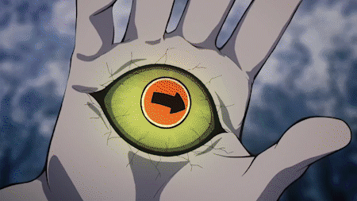
Aberturas
Veja todas as aberturas do anime
Abertura (1º Temporada) Gurenge - LiSA
Abertura (2º Temporada) Akeboshi - LiSA
Abertura (3º Temporada) Zankyou Sanka - Aimer
Abertura (4º Temporada) Kizuna no Kiseki - MAN WITH A MISSION x mile
Abertura (5º Temporada) Mugen - MY FIRST STORY